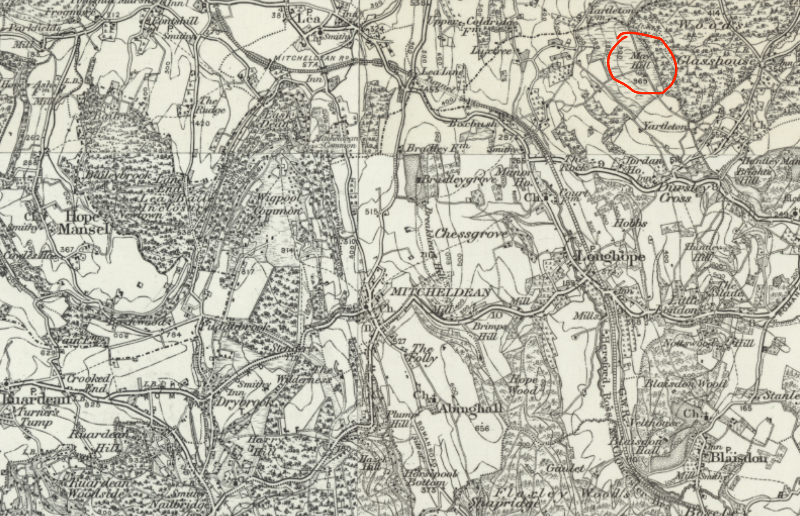

Old Ellen and the May Hill Sensation#
As the old tales tell it, one of the giveaway signs of a witch is their animal familiar: a black cat, for example, or a dog, or maybe even a hare. But a connection might also exist between an animal that had been bewitched, and the person responsible for the bewitchment. Or so the belief appeared to go in a certain part of the Forest of Dean in the 1830s.
From a correspondent, February 1834
Hereford Journal - Wednesday 12 February 1834
Forest of Dean.—(From a correspondent.)—In a certain town in this district, which shall for the present be nameless, lately occurred the following incident, so mixed in its character, as to be doubtful whether it more deserves the smiles of the laughing, or the tears of the weeping, philosopher. The pigs of certain individuals, by no means of what is termed the lowest class, having committed sundry vagaries unaccordant with piggish practices in general, were set down by their sagacious owner as under the influence of witchcraft. Consulting the doctrines of a “schoolmaster,” not precisely the one who is said now to be so much “abroad,” the owner prepared a charm, in order to discover the operator of the enchantment, and to counteract its influence, and for this purpose they killed one of the animals, took out its heart, which they stuffed with pins and thorns, and then laid the fire under the cinders. Scarcely had the heart began to roast, when in rushed an old woman of the neighbourhood—her hair dishevelled—her cheek flushed—and her whole face streaming with perspiration—who, forthwith, began to inquire about the pigs, and vehemently to disclaim having touched them. It is needless to say that this satisfactory test at once decided that the old woman was the witch; but the injured owners of the pigs were in too much awe of her power to revenge themselves by violent means upon her. At her request she was allowed to see the enchanted animals, when the old dame blessed them, passed her hands over them, and retired, since which, it is said, the pigs have recovered.—Monmouth Merlin.
The previous story, from the Monmouth Merlin, was syndicated widely, even as far as the London papers, with the opening “In a town near the Forest of Dean lately occurred, …” (for example, The Examiner - Sunday 16 February 1834, Globe - Thursday 13 February 1834).
A little over fifty years later, in the 1880s, a flourishing time for the new field of folklore (the FolkLore society was founded in 1878, for example) the original story seems to have been rediscovered:
Witchcraft in Dean Forest, November 1887
Stroud News and Gloucestershire Advertiser - Friday 25 November 1887
WITCHCRAFT IN DEAN FOREST.
“In a certain town in this (Forest of Dean) district” (said the “Journal” of February 15th. 1834) “which shall for the present be nameless, lately occurred the following incident: The pigs of certain individuals by no means of what is termed the lowest class, having committed sundry vagaries, unsocordant with piggish practices in general, were set down by their sagacious owners as under the influence of witchcraft. Consulting the doctrines of a schoolmaster, ‘not precisely’ one who is said now to be so much ‘abroad,’ the owners prepared a charm, in order to discover the operator of the enchantment, and to counteract its influence. For this purpose they killed one of the animals, took out its heart, which they stuffed with pins and thorns, and then laid it on the fire under the cinders. “Scarcely had the heart began to roast” (stated the correspondent) “when in rushed an old woman of the neighbourhood—her hair dishevelled—her cheek flushed—and her whole face streaming with perspiration—who forthwith began to inquire about the pigs, and vehemently to disclaim having touched them. It is needless to say that this satisfactory test at once decided that the old woman was the witch, but the injured owners of the pigs were too much in awe of her power to revenge themselves by violent means upon her. At her request she was allowed to see the enchanted animals, which the old dame blessed, passed her hands over them, and retired, since which, it is said, the pigs recovered.”
But even as the nineteenth century came to a close, and the new century dawned, a new age of enlightenment with a scientific world view, a new age of reason, where civilised society could study the behaviour of “savages” with a critical eye, it seems that some of the folk who in lived in the Forest of Dean still believed they had a local cunning woman, which, in a rather cruder way, is to say, a local witch.
Robbery at May Hill#
Our story begins with an otherwise innocuous report of a local robbery, from a home in May Hill, near Mitcheldean, in the Forest of Dean.

Alleged robbery at May Hill, May, 1905
Ross Gazette - Thursday 11 May 1905
ALLEGED ROBBERY AT MAY HILL.
On Saturday afternoon, the residence of Mr. John Markey, of May Hill, was entered, and a sum of £50 is said to have been stolen from a drawer. It appears that Mr. Markey had locked the door before leaving and secreted the key upon the premises, and, as there is no evidence of breaking in, it is supposed that the robber procured the key, and after helping himself to the above named sum, re-locked the door and placed the key again in its usual hiding-place. The police are investigating the matter.
So far, so Agatha Christie. A mystery, perhaps, in how the robber had managed to enter the property, found the valuable prize hidden away in a drawer, and then made good their escape without any sign of how they had entered, or exited, the premises.
A local suspect was identified, and their house searched, but to no effect.
At which point, Mr Markey seems to have gone to the local Miss Marple — the local cunning woman — to solicit an alternative form of help. At which point, a rather disturbing twist was added to the story, as Mr Markey’s daughter and grand-daughter were afflicted with some mental torment, and his wife disappeared.
Remarkable effect of superstition, May 1905
Gloucester Citizen - Saturday 20 May 1905
THE MAY HILL ROBBERY.
Extraordinary Sequel.
REMARKABLE EFFECT OF SUPERSTITION.
TWO WOMEN DEMENTED.
Our Long-hope correspondent writes as follows:—
The peaceful conditions usually prevailing among the residents of May Hill have been considerably disturbed during the present week by a series of sequences to the robbery reported to have taken place a fortnight ago in that locality, when a sum of money, said to about £50, was taken from a drawer in the residence Mr. John Markey.
It appears that suspicion rested upon a local resident who is known to be of a quiet and respectable demeanour, and a warrant to search his house and premises was procured, but notwithstanding a most minute search no trace of the money could be obtained. In consequence of this failure it is stated that the services of a woman from the Forest of Dean, who is believed by superstitious people to be possessed of powers of witchcraft, were requisitioned. After her advent upon the scene remarkable and alarming occurrences took place, and daughter and grand-daughter of Mr. Markey, both married women, and residing within few yards of their parents, became so affected as to lose their reason, and their violent actions threw the locality into a state of consternation. Windows and other breakable property were smashed to atoms, including some old and valuable china. To such a pass did matters come that Mrs. Barnes was removed Gloucester Asylum, and her daughter was taken to Newent Workhouse Hospital on Friday morning.
Unable to bear the strain of events any longer, Mrs. John Markey, wife of the person whose house was robbed, suddenly left her house on Friday morning at 8 o’clock, without hat or jacket, and had not returned late Friday evening, and despite the efforts of search party who worked all day, no trace of her could be found.
A search for Mrs. Markey was organised, but without success.
Mrs. Markey still Missing, May 1905
Gloucester Citizen - Monday 22 May 1905
THE LONGHOPE ROBBERY.
Mrs. Markey still Missing.
Inspector Dennis went down Gloucester on Sunday and organised a fresh search for the wife of Mr. John Markey, who disappeared from home on Friday under circumstances already reported. A large band of searchers covered a big area, embracing the surrounding woodland, fields, and ponds, but without avail, no trace of Mrs. Markey being found.
Despite hearing the searchers, Mrs. Markey had not reveled herself. But a day later, she returned home of her own volition, albeit with magical protection.
Mrs. Markey returns home, May 1903
Gloucestershire Echo - Tuesday 23 May 1905
THE MAY HILL SENSATION.
MRS. MARKEY RETURNS HOME.
On Monday, Inspector John Dennis, of Gloucester, again visited May Hill, and organised another party to search the woods for Mrs. John Markey, whose mysterious disappearance from home on Friday had occasioned consideable consternation in the parish. About five o’clock on Monday evening the unfortunate woman returned home in an exhausted condition. She stated that she had been sitting down in the wood “hiding from the witches,” and that she had had nothing to eat or drink except leaves and water.
Despite the return of Mrs. Markey, things continued to get worse for the family, as Markey’s second son also became afflicted by the madness that had overtaken his daughter, grand-daughter and wife.
Another painful development, May 1905
Gloucester Citizen - Tuesday 23 May 1905
THE MAY HILL SENSATION.
Return of Mrs. Markey.
ANOTHER PAINFUL DEVELOPMENT.
The mystery surrounding the disappearance of Mrs. John Markey from her home on Friday morning last was put to an end by her returning home on Monday afternoon about 5 p.m., having, it is stated, spent the time in Newent Wood, which is close to her home. Inspector Dennis, Gloucester, was present when she came home. Mrs. Markey was in a very exhausted condition, and said she had had nothing but a little water and some leaves since Friday. She also said she had heard members of the search party pass close by her while she was hiding in the wood, but she was too frightened to come out. When she arrived home Mrs. Markey was carrying a large hazel stick, and on being questioned she replied that she had used it “to keep the witches away.”
Another sad development in this mysterious affair is occasioned by the present state of mind of George Markey, second son of John Markey. It appears that upon hearing of the robbery he came to his parents, presumably to assist in clearing up the affair, and on Friday morning he went to get some brandy for his mother, but on his return found she had disappeared, at which he seemed to be upset. On Saturday he returned to his home at Blakeney, but, being unable rest there, he returned to May Hill on Sunday afternoon. His condition became rapidly worse, and all day Monday it required the efforts of three men to control him, and in spite of this restraint it is said that he broke up a large sofa in the house. The authorities have been communicated with on his account. George Markey was married for the second time on Easter Monday, his first-wife having died in an asylum.
The Ross Gazette reiterated the whole of the story to date:
An extraordinary sequel, May 1905
Ross Gazette - Thursday 25 May 1905
Also appeared in Gloucester Journal - Saturday 27 May 1905.
THE MAY HILL ROBBERY.
EXTRAORDINARY SEQUEL.
The peaceful conditions usually prevailing among the residents of May Hill have been considerably disturbed during the past week by a series of sequences to the robbery reported to have taken place a fortnight ago in that locality, when a sum of money, said to be about £50, was taken from a drawer in the residence of Mr. John Markey.
It appears that suspicion rested upon a local resident, who is known to be of a quiet and respectable demeanour, and a warrant to search his house and premises was procured, but notwithstanding a most minute search no trace of the money could be obtained. In consequence of this failure, it is stated that the services of a woman from the Forest of Dean, who is believed by superstitious people to be possessed of powers of witchcraft, were requisitioned. After her advent upon the scene, remarkable and alarming occurrences took place, and a daughter and grand-daughter of Mr. Markey, both married women, and residing within a few yards of their parents, became so affected as to lose their reason, and by their violent actions threw the locality into a state of consternation. Windows and other breakable property were smashed to atoms, including some old and valuable china. To such a pass did matters come that Mrs. Barnes was removed to Gloucester Asylum, and her daughter was taken to Newent Workhouse Hospital on Friday morning.
Unable to bear the strain of events any longer, Mrs. John Markey, wife of the person whose house was robbed, suddenly left her house on Friday morning at 8 o’clock, without hat or jacket, and despite the efforts of a search party, no trace of her could be found. Inspector Dennis went down to Longhope from Gloucester on Sunday and organised a fresh search. A large band of searchers covered a big area, embracing the surrounding woodland, fields, and ponds, but without avail, no trace of Mrs. Markey being found.
The mystery surrounding the disappearance of Mrs. John Markey from her home on Friday morning last was put to an end by her returning home on Monday afternoon about 5 p.m., having, it is stated, spent the time in Newent Wood, which is close to her home. Inspector Dennis, Gloucester, was present when she came home. Mrs. Markey was in a very exhausted condition, and said she had had nothing but a little water and some leaves since Friday. She also said she had heard members of the search party pass close by her while she was hiding in the wood, but she was too frightened to come out. When she arrived home Mrs. Markey was carrying a large hazel stick, and on being questioned she replied that she had used it “to keep the witches away.”
Another sad development in this mysterious affair is occasioned by the present state of mind of George Markey, second son of John Markey. It appears that upon hearing of the robbery he came to his parents, presumably to assist in clearing up the affair, and on Friday morning he went to get some brandy for his mother, but on his return found she had disappeared, at which he seemed to be upset. On Saturday, he returned to his home at Blakeney, but, being unable to rest there, he returned to May Hill on Sunday afternoon. His condition became rapidly worse, and all day Monday it required the efforts of three men to control him, and in spite of this restraint it is said that he broke up a large sofa in the house. The authorities have been communicated with on his account. George Markey was married for the second time on Easter Monday, his first wife having died in an asylum.
The condition of Markey’s second son, however, has deteriorated to such an extent that he essentially seems to have been “sectioned”.
Further development, May 1905
Gloucester Citizen - Thursday 25 May 1905
THE MAY HILL SENSATION.
Further Development.
SCENE ON BLAKENEY HlLL.
There is a further unfortunate development in the extraordinary occurrences which have followed upon the now notorious incidents associated with the alleged housebreaking and theft of money from the house of Mr. John Markey, of a Longhope.
There appears to be large family of the Markeys, and one of the sons (George), has been living first in one place and then another in the Blakeney district, has naturally been much interested in the unhappy affair. Unable to rest either at Blakeney or Longhope, he has spent his time wandering backwards and forwards between the two places. Our readers will remember that on Tuesday we reported that he developed all those symptoms which suggested that he, too, had become so upset as to be rapidly losing his reason, and he became so violent as to require the strength of three men to keep him quiet. He was taken to his Blakeney Hill home by two brothers late on Wednesday evening, and they had not long left him before it was clear very serious was in store for his friends. So strange did he become at home that his young wife and her mother, with whom was staying on Blakeney Hill, deemed it prudent to leave the house, and a kind neighbour having offered them a home for the night, arrangements were made to carry this into effect. Markey now became violent, and in the course of a struggle which took place in the court he seems to have fallen against a sharp spike and very much damaged his eye. He then ran away, both bootless and hatless. but was eventually taken charge of by a friendly collier who took him into the house of Mr. William Hale. Some little before midnight, by which time the hill-side was in a state of agitation, Sergt. Jones, who had been sent for by two or three different people, arrived upon the scene, and eventually, as the poor fellow’s behaviour upon the highway was so strange, the sergeant took him into custody on suspicion of being a wandering lunatic. He remained in the cell during Wednesday night, and on Thursday morning Dr. Harris attended to his injuries. Mr. Edwin Long, the East Dean relieving officer, has been communicated with, and when our message left he was expected to take possession of the man and convey him to Newnham to be examined by Dr. Carleton, the official medical man for the district.
In some further particulars which have been obtained, we learn that during Wednesday evening Mrs. G. Markey became very upset and prostrate, and seeing her condition her husband produced a quantity of what he described as “witch wood” and which he frantically urged her to seize in her hands, and to grasp as tightly as she could and then to pray fervently, so as circumvent the witches which he seemed imagine had influenced their family.
GEORGE MARKEY PRONOUNCED INSANE
[BY TELEGRAPH.]
George Markey was examined by Dr. Carleton on Thursday afternoon, and was pronounced insane. The usual magistrate’s order was signed by Mr. Arnold Thomas. The poor fellow who is nearly half-dead from the injury to his eye is greatly troubled, and continually refers to the “witchery” practised upon his family, which he seems to blame for all the serious trouble which has come upon them.
The developing story now starts to pay attention to the sense in which “witchcraft” might have a role to play in the proceedings.
A Gloucestershire witch, May 1905
Birmingham Mail - Friday 26 May 1905
A GLOUCESTERSHIRE WITCH
STRANGE STORY FROM THE FOREST OF DEAN
SUPERSTITTON AND MADNESS.
The people residing about that portion of the West of England known as the Forest of Dean are notoriously superstitious, and from time to time incidents proving this have occurred. A remarkable story now comes from the usually peaceful parish of May Hill, in West Gloucestershire. Some time ago, the tale goes, a farmer reported that he had lost £50. from his house, someone having taken from its secret hiding place the key to the box in which his wealth was stored, and abstracted £50. Suspicion fell on a resident, whose house was searched, but without any trace of the money being discovered. Then it was suggested that a “witch” should be consulted, and the suggestion was acted upon, with results more disastrous to the farmer and his family than the thief. Immediately the “witch” arrived on the scene the farmer’s daughter and grand-daughter, both married women, showed unmistakable evidences of madness, and soon the former had removed to Gloucester Asylum, whilst the latter was taken to Newent Workhouse Hospital. The same morning the farmer’s wife suddenly left home, and in spite of a whole day’s search by Inspector Dennis, of the Gloucester Police, and a staff of constables and many neighbours and friends, her whereabouts remained undiscovered. She returned home, however, on Monday evening in a very exhausted condition, having subsisted on the green leaves of the wood and a little water from a ditch. She had both seen and heard the searchers, she said, but was too terrified to discover her whereabouts to them. As showing the state of the poor woman’s mind, the correspondent understands that, replying to an enquiry why she carried a hazel stick in her hand, she said it was to keep the witches away.
The latest victim of this drama is the farmer’s son. His first wife died about two years ago in Gloucester Asylum, and it was only on Easter Monday that he married a Blakeney Hill girl. The supposed “visitation of evil spirits” upon his father’s farm, he seems to have imagined, would also fall to his lot, and for his own protection he also possessed himself a quantity of twigs with which to keep the witches away. After he had created a disturbance on May Hill, two brothers brought him to Blakeney on Wednesday evening, where he behaved very strangely, eventually injuring himself by running his head against a large iron spike. This so upset his young wife and her mother that they made arrangements to beat a hasty retreat. Imagining that she, too, was the object of the attention of the witch, the man frantically implored his distressed wife to seize the hazel stick and to pray frequently that she might escape the evil spirit.
It is not surprising to hear, after all this, that the whole country-side is now in a state of foment, and stories are being told of the mysterious smashing of windows and the destruction of other property.
The “witch” who is believed to have wrought all this mischief resides in a remote part of the Forest of Dean, and pilgrimages are frequently made to her by persons who imagine that the old lady has powers of divination, or, at any rate, can gave a friendly lead in unravelling mysterious matters. After the latest samples of her handiwork her trade may be expected to suffer a decline.
The still intrigued London press provided a recap of the story so far in the weekend papers, albeit with slightly garbled facts in the case of the Daily Mirror:
Under the influence of the “evil eye”, May, 1905
Daily Mirror - Saturday 27 May 1905
TALE OF WITCHCRAFT
English Family Under Influence of the “Evil Eye.”
STRANGE HAPPENINGS.
The peaceful little village of May Hill, in Gloucestershire, has been the scene of a number of most strange events.
On the 6th of the present month a farmer named Markey reported that he had lost £35, The aid of the police was invoked, and two suspected houses searched, but no trace of the money was found.
On the 17th Markey drove over to the Forest of Dean and consulted a witch, in the hope of obtaining information concerning the money.
On the 18th Mrs. Barnes, Markey’s daughter, went out of her mind, and in the evening of the same day Mrs. Green, Mrs. Barnes’s, daughter, also went mad.
They broke all the windows and the crockery, and the farmer, now raving mad, is now in Gloucester Asylum, and the others in Newent Workhouse Hospital.
On May 19 Markey’s wife ran away at seven in the morning, and, in spite of search by the police, could not be found. On the 20th Markey became very strange.
On Monday last Mrs. Markey returned home in the evening, having been in the woods at the time since her disappearance, and having lived on green leaves and water.
These strange events are attributed to the fact that Markey consulted the witch, and the whole, neighbourhood is in a ferment.
On Tuesday a son of Markey, who lived at Blakeney Hill, showed signs of madness after visiting May Hill.
Finally, on Wednesday evening, he was locked up in a cell, and on Thursday afternoon was pronounced insane.
Other London papers reported how Markey’s house had by this time started to become something of a tourist attraction.
A story of witchcraft, and morbid-minded Pilgrims, May, 1905
Morning Leader - Saturday 27 May 1905
A STORY OF WITCHCRAFT.
FAMILY AFFLICTED WITH SUDDEN MADNESS, STRANGE SUPERSTITIONS IN AN ENGLISH VILLAGE.
This amazing story of “witcheraft” comes from Newnham-on-Severn, Gloucestershire, where a middle-aged laborer named George Markey has been pronounced insane by Dr. Carleton, the medical officer.
Markey is one of a large family, and married his second wife, a Gloucestershire girl, only last Easter.
His old parents live at a village called May Hill, on the west side of Gloucester, where they occupied a small farm.
Some time ago this farmer reported the loss of some £50 from his secret store of savings; and when no clue could be obtained to the thief, the services of a “witch “ are said to have been called in.
Madness Begins.
The result has been strange and unforeseen. Immediately the alleged “witch”—who was really a poor widow woman—arrived on the scene, the farmer’s daughter and granddaughter are said to have shown unmistakeable evidences of madness, and one had to be removed to the asylum at Gloucester.
Then the wife of Mr. Markey, sen., became affected in the same way, and ran away to the woods, where she remained in hiding from the police, who were sent in search of her. After this the son, already referred to, was found to be similarly affected; and he became such a terror to his wife and the neighbors that it was judged necessary to place him under restraint.
Ran on an Iron Spike.
Two brothers took charge of him pending his examination by the doctor; and at a place called Blakeley he is said to have run his head against a large, iron spike, caveing a terrible gash in his face.
He seems to have imagined that the supposed visitation of the evil spirits would fall on his household, and before he was taken away he produced a quantity of what he described as “witch wood,” which he urged his wife to hold carefully, so as to circumvent the “witches” which he imagined had influenced the family.
The alleged “witch” is said to reside in the Forest of Dean, and pilgrimages are stated to have been frequently made to her by persons who imagined that the old woman had powers of divination and could give friendly help in unravelling matters of mystery.
Woman from the Woods.
The frightened woman who went to the woods returned after a long absence in a very exhausted condition. She had been feeding on leaves, and had drunk water from a ditch. She said she had both seen and heard the searchers, but was too terrified to discover her whereabouts to them.
The supposed visitation of evil spirits to the district has had a very alarming effect upon other inhabitants, and the whole hillside is said to be in a state of ferment, owing, it is said, to the mysterious smashing of windows and the destruction of other property which has been going on.
Morbid-minded Pilgrims.
The village, which has resumed its usual quiet calm after these exciting events, has been visited by a large number of cyclists from Gloucester, who gaped with curiosity in the house occupied by John Markey.
The presence of the wheelmen created some little excitement among the villagers, and, fearing further trouble, a resident successfully persuaded the cyclists to take their departure.
In certain quarters, it appears that doubts were being raised as to whether there had been any robbery at all…
Suffering from delusions, May 1905
Morning Leader - Monday 29 May 1905
THE “WITCHCRAFT” STORY.
GRANDFATHER ALSO BECOMES VERY VIOLENT.
Further information has come to light concerning the amazing story of “witchcraft” at Newnham-on-Severn, Gloucestershire.
Madness was said to have taken hold of the family of John Markey, a laborer, and an old widow who lives in the Forest of Dean was said to be a witch, and to have cast a spell over the afflicted people.
The violent action of the daughter and granddaughter threw the locality into a state of consternation. The windows of the house were wrecked, and some antique china, which had been in the Markey family for many years, was broken to fragments and thrown out of the house.
On returning and finding this destroyed, Markey became very violent, and had to be taken care of by three of the strongest men in the village.
The police, after exhaustive inquiries, are of opinion that Markey’s statement that he had been robbed of £50 is incorrect, and attribute it to the fact that for some weeks he has suffered from delusions.
Only a few days before the alleged robbery he complained of having been robbed of a valuable gold watch, which his relatives well know he never possessed.
Elsewhere, it seems as if one correspondent had tracked down the “witch” consulted by Markey, and had an interview with her:
Interview with “the witch”, May, 1905
Gloucester Citizen - Monday 29 May 1905
THE MAY HILL SENSATION.
INTERVIEW WITH THE “WITCH.” A correspondent of the “Weekly Dispatch” has had an interview with Old Ellen, the “wise woman,” who is stated to have been consulted by Mr. John Markey, of Longhope, in connection with the robbery at his house, and which has been followed by the remarkable events reported from day to day in our columns.
Old Ellen herself, says the correspondent, is within a few months 70. Her appearance is not prepossessing. Her hair tangled and tousled and ragged, grey wisps hanging about her unquestionably dirty, old face. But she is not without a merry twinkle in her eye times, and her deeply-lined cheeks bear the wrinkles of good humour and kindliness. As soon as it was bruited abroad that a stranger had entered the door —forbidden of late even to the most regular customers —there was a succession of callers.
One or two she satisfied.
“Take these, my dear; they touch the melancholy organs at once, and you’ll be quite rid in a week of that depression,” was her advice to one applicant.
“I have cured eight cases of cancer, but you can’t cure a cancer when it has spread in more than 13 different directions,” was one of her dogmas.
“I have cured hundreds of tumours and thousands of sores,” she lightly boasted, and there is not shadow doubt about it said a number of neighbours, whose opinions upon her skill were invited later.
As the twilight deepened the bundles of herbs on every hand, the mysterious pills and potions in heterogeneous glass bottles, and the old, old woman with her parchment complexion, became more and more eerie, and it became possible to one who had not quite forgotten the misfortunes and trials of Alice in Wonderland and Macbeth and the indiscreet friends of the Lancashire witches to press the subject of Mr. John Markey’s week of disasters.
Huntley and May Hill villagers say Old Ellen showed Markey in a crystal, when he consulted her on May 17th, the face of a member of his family as that of the thief, and that this magical achievement led directly to the insanity of three members of the family and the ill-health the old couple themselves.
Old Ellen’s voice thrilled and deepened as she told her story, and her huge and handsome collie, which had been curled to her feet, growled angrily in sympathy.
“I had never seen him before that day, and I told him I did not like his face. I would not take his money, I can read faces. I know phrenology, and can tell a man’s thoughts. I knew what wanted. I knew where his money was. What I told him was to wait nine days. If he had done so it would have been all right with him. I do not need to use crystals; I should not have shown him a face if I could.”
The more ignorant of the neighbours of the Markeys are certainly terribly alarmed at all the strange happenings, and hazel sticks are frequently seen in their hands.
Reporters for the Daily Mirror also appeared to have been on the case, securing not just a comment from the old woman, but also a photograph of her, along with her dog, as well as photographs of Mr. Markey and various members of his family:
{kind=link}
Fig. 1 A woman of seventy, known as Old Ellen, who lives in the Forest of Dean, is alleged to have bewitched the family of Farmer Markey, of May Hill, near Cinderford. Owing to her wiles, it is said, Markey has become bedridden, and his son, daughter, and granddaughter have been rendered insane. No. 1 is a portrait of Old Ellen, the reputed witch; No. 2 shows Farmer Markey at work in his garden; and No. 3 is a photograph of his son and niece.#
Published in Daily Mirror - Monday 29 May 1905.
The Forest Witch, May, 1905
Daily Mirror - Monday 29 May 1905
THE FOREST “WITCH.”
Denies That She Is Responsible for a Farmer’s Ill-Fortune.
The alleged “witch” of the Dean Forest, in Gloucestershire, a visit to whom is associated in the district with the series of terrible misfortunes which have recently befallen the family of Mr. John Markey, of Mayhill, ten miles west of Gloucester, is not by any means so formidable a personage as she has been represented.
“Old Ellen” was visited yesterday at her home in the heart of the Forest. She is a herbalist, nearly seventy years of age, and in her immediate neighbourhood has built up a great reputation as a healer of all kinds of human ills. Locally they do not call her a witch, but at Mayhill, ten miles away, the most tremendous powers have been attributed to her.
Her own account of her relations with farmer Markey is brief and positive. “He was a stranger to me till last Wednesday week, and then he came with his wife to ask for herbs, and to see if I could tell him who had stolen some money from him.” Though I knew where his money was before he spoke, I told him nothing, except that he had better wait nine days, and then his money would come back to him.
“I am naturally a clairvoyante, just a little, but I have never had dealings with magic. Markey’s son and daughter and granddaughter have not gone mad through me. I have tried to do good all my life, and have cured thousands of people.”
Poor old Mr. Markey has become bedridden since last Monday. He is seventy-six, and very feeble. He would not say anything about the witch, but just shook his head and muttered “It’s a bad business.” The neighbours at Mayhill say that he was shown in a crystal by the “witch” the face of a relative who, she said, was the thief, and that this caused all the mischief.
The weekly Ross Gazette reviewed the events over the previous week for the readers in nearby Ross-on-Wye:
Unfortunate developments, and an interview with the witch, June 1905
Ross Gazette - Thursday 01 June 1905
THE MAY HILL SENSATION.
There is a further unfortunate development of the extraordinary occurrences which have followed upon the now notorious incidents associated with the alleged housebreaking and theft of money from the house of Mr. John Markey, of May Hill, near Longhope.
One the sons (George), who has been living first in one place and then another in the Blakeney district, has naturally been much interested in the unhappy affair. Unable to rest either at Blakeney or at Longhope, he has spent his time wandering backwards and forwards between the two places. We reported that he developed all those symptoms which suggested that he, too, had become so upset as to be rapidly losing his reason, and ho became so violent as to require the strength of three men to keep him quiet. he was taken to his Blakeney Hill home by two brothers late on Wednesday evening, and they bad not long left him before it was clear very serious trouble was in store. So strange and violent did he become at home, that his young wife and her mother deemed it prudent to leave the house, and a neighbour offered them a home for the night. Markey now became violent, and in the course of a struggle, which took place in the court, he seems to have fallen against a sharp spike and very much damaged his eye. He then ran away, both bootless and hatless, but was eventually taken charge of by a friendly collier, who took him into the house of Mr. William Hale. Some little time before midnight, by which time the hillside was in a state of agitation. Sergt. Jones, who had been sent for by two or three different people, arrived upon the scene, and eventually, as the poor fellow’s behaviour upon the highway was so strange, the sergeant took him into custody on suspicion of being a wandering lunatic. He remained in the cell during Wednesday night, and on Thursday morning, Dr. Harris attended to his injuries.
During Wednesday evening, Mrs. G. Markey became very upset and prostate, and seeing her condition, her husband produced a quantity of what he described as “witch wood” and which he frantically urged her to seize in her hands and to grasp as tightly as she could, and then to pray fervently, so as to circumvent the witches which he seemed to imagine had influenced their family.
George Markey was examined by Dr. Carleton on Thursday afternoon, and was pronounced insane. The usual Magistrate’s order was signed by Mr. Arnold Thomas. The poor fellow, who is nearly half-dead from the injury to his eye, is greatly troubled. and continually refers to the “witchery” practised upon his family, which he seems to blame for all the serious trouble which has come upon them.
A correspondent of the Weekly Dispatch has had an interview with Old Ellen, the “wise woman,” who is stated to have been consulted by Mr. John Markey, in connection with the robbery at his house. Old Ellen herself, says the correspondent, is within a few months of 70. Her appearance is not pre-possessing. Her hair is tangled and tousled and ragged, grey wisps hanging about her unquestionably dirty, old face. Huntley and May Hill villagers say Old Ellen showed Markey in a crystal, when he consulted her on May 17th, the face of a member of his family as that of the thief, and that this magical achievement led directly to the insanity of three members of the family and the ill-health of the old couple themselves. Old Ellen’s voice thrilled and deepened as she told her story. “I had never seen him before that day. and I told him I did not like his face. I would not take his money, I can read faces. I know phrenology, and can tell a man’s thoughts. I knew what he I wanted. I knew where his money was. What I told him was to wait nine days. If he had done so, it would have been all right with him. I do not need to use crystals; I should not have shown him a face if I could.”
Perhaps as a result of coverage of the story by the London papers, Irish Parliamentary Party MP for South Down, Jeremiah McVeagh, saw an opportunity to bait the Government and raised a question on the matter in the House of Commons.
Question in the House of Commons, June 1905
Gloucester Citizen - Thursday 01 June 1905
THE MAY HILL SENSATION.
Question in the House of Commons.
HOME OFFICE INQUIRIES.
In the House of Commons on Wednesday Mr. McVeagh asked the Home Secretary whether his attention had been called to the practice of witchcraft at May Hill and other parts of Gloucestershire; whether he was aware that in the case of a family, named Markey, four members last week lost their reason, and one attempted to commit suicide, at a place called Blakeney, as a result of these practices; and, in view of the alarm in the locality, what action would taken by the authorities to suppress witchcraft.
Mr. Akers Douglas: I have made inquiries into this very curious case. I find that Markey and his wife consulted a supposed witch about some money which they believed to have been stolen, and that subsequently three members of the family became insane, while the wife left the house, and remained concealed in wood for nearly four days. If sufficient evidence is forthcoming to justify a prosecution, proceedings will be taken by the local police against the woman who was consulted.
McVeagh’s concerns appear to be whether safeguards should be put in place against the practice of witchcraft, perhaps also in part to reassure the populace in order to prevent them taking their own vigilante action against Old Ellen. (Only ten years before, in 1895, in Clonmel, Tipperary, a young woman, Bridget Cleary, had been burned, and killed, as “a witch” —or more accurately, as a changeling— by her husband.)
A recap in the Gloucester Journal - Saturday 03 June 1905 reprinted Old Ellen’s interview and the House of Commons report as they appeared in the Gloucester Citizen.
A summary of the story, and a brief comment upon it, also made it across the border and into the Welsh newspapers:
Superstition in Dean Forest, June 1905
Cardiff Times and South Wales Weekly News — Saturday June 03 1895
Ellen “the Witch.”
SUPERSTITION IN DEAN FOREST
A Farmer’s Family Woes.
A correspondent of the “Weekly Dispatch” has had an interview with old Ellen, the wise woman, who is alleged to have been the prime cause of a series of dire misfortunes which have befallen a small farmer named John Markey and his wife.
Old Ellen herself, says the correspondent, is within a few months of 70.
Tousled and Tangled Hair.
Her appearance is not prepossessing. Her hair Is tangled and tousled and ragged, grey wisps hanging about her unquestionably dirty, old face.
But she is not without a merry twinkle in her eye at times, and her deeply lined cheeks bear the wrinkles of good humour and kindliness. As soon as it was bruited abroad that a stranger had entered the door—forbidden of late even to the most regular customers—there was a succession of callers.
One or two she satisfied.
“Take these, my dear they touch the melancholy organs at once, and you’ll be quite rid in a week of that depression,” was her advice to one applicant.
“I have cured eight cases of cancer, but you can’t cure a cancer when it has spread in more than 13 different directions,” was one of her dogmas.
I have cured hundreds of tumours and thousands of sores,” she lightly boasted, and there is not a shadow of doubt about it said a number of neighbours, whose opinions upon her skill were invited later.
Herbs and Mysterious Pills.
As the twilight deepened the bundles of herbs on every hand, the mysterious pills and potions in heterogeneous glass bottles, and the old, old woman with her parchment complexion, became more and more eerie, and it became possible to one who had not quite forgotten the misfortunes and trials of Alice in Wonderland and Macbeth and the indiscreet friends of the Lancashire witches to press the subject of Mr John Markey’s week of disasters.
The positive facts are these:—
On May 6 Mr and Mrs Markey left their farm cottage on the south slope of May Hill, which is 973ft high and nine miles west of Gloucester, and went to the latter place to shop.
They locked the front door on the inside, and the back door from the outside, placing the key on a ledge. They returned late, and noticed nothing unusual till the next morning.
Then they found that the right-hand top drawer of the chest in their bedroom had been forced open with a hammer, and £34 in gold and about a pound’s worth of silver was missing.
Police-Sergeant Hunt, of Huntley village, close by, was called in on the Monday, and still has the case in hand, for the money has not been traced.
Within a few yards of the cottage of the Markeys lived in separate dwellings their daughter and granddaughter, both married.
A search warrant was issued at Newent, but a thorough turn-out out of a cottage which was suspected produced no result.
Then, on May 17, Farmer Markey drove to Cinderford to consult Old Ellen. The motive was the double one of remedying ill-health and worry about his heavy loss.
What happened at the meeting between the wise woman and the possibly foolish farmer is a mystery; but on Thursday May 18, Markey’s daughter went mad, and his granddaughter, in violent hysteria, smashed windows and crockery wholesale.
Crazed by Family Misfortunes.
That day Markey himself took to his bed with rheumatism, and worst of all, his elder son George, who had come 14 miles to see if he could help his parents, was crazed by the accumulated horror of the family misfortunes, and though his brother Sydney got him safely home to Blakeney, he seriously injured his eye with a spike before he could be taken to Gloucester Asylum.
Huntley and May Hill villagers say Old Ellen showed Markey in a crystal the face of a member of his family as that of the thief, and that this magical achievement led directly to the insanity of three members of the family and the ill-health of the old couple themselves.
Old Ellen’s voice thrilled and deepened as she told her story, and her huge and handsome collie, which had been curled at her feet, growled angrily in sympathy.
“I had never seen him before that day, and I told him I did not like his face. I would not take his money, I can read faces. I know phrenology, and can tell a man’s thoughts. I knew what he wanted. I knew where his money was. What I told him was to wait nine days. If he had done so it would have been all right with him. I do not need to use crystals: I should not have shown him a face if I could.”
The more ignorant of the neighbours of the Markeys are certainly terribly alarmed at all the strange happenings, and hazel sticks are frequently seen in their hands.
Superstition is still viralent, and West Gloucestershire to-day has made the evil eye the chief topic of conversation.
In Ross-on-Wye, the Ross Gazette was still reporting matters a week or so after everyone else:
Home Office Enquiries, June 1905
Ross Gazette - Thursday 08 June 1905
THE MAY HILL SENSATION, HOME OFFICE INQUIRIES.
In the House of Commons on Wednesday. Mr. McVeagh asked the Home Secretary whether his attention had been called to the practice of witchcraft at May Hill and other parts of Gloucestershire; whether he was aware that in the case of a family, named Markey, four members last week lost their reason, and one attempted to commit suicide, at a place called Blakeney, as a result of these practices; and, in view of the alarm in the locality, what action would be taken by the authorities to suppress witchcraft.
Mr. Akers Douglas: I have made inquiries into this very curious case. I find that Markey and his wife consulted a supposed witch about some money which they believed to have been stolen, and that subsequently three members of the family became insane, while the wife left the house, and remained concealed in a wood for nearly four days. If sufficient evidence is forthcoming to justify a prosecution, proceedings will be taken by the local police against the woman who was consulted.
A statement by Ellen Hayward herself was then published in the Gloucester Citizen of Friday, 9th June, 1905, and again, with the same headline, in the Ross Gazette a week later, on Thursday 15 June 1905.
Statement by Ellen Hayward, June, 1905
Gloucester Citizen - Friday 09 June 1905
THE MAY HILL SENSATION.
STATEMENT BY ELLEN HAYWARD.
We are asked to publish the following communication, which is signed by “Ellen Hayward, Pembroke-road, The Meend, Cinderford”:
Whereas there have been certain cruel and scandalous allegations circulated about me, which are destined to do me very serious harm, I would like to state that I am the “Old Ellen” referred to in the local and other papers. The statements made are absolutely false and unfounded, and I would like to say I have been living in the Forest of Dean for 30 years, for 19 years at the above address; and have gained my livelihood for 45 years as a herbalist, also a dresser of cuts, sores, and wounds, of which I have cured some hundreds, both far and near. I am widely known through Gloucestershire and surrounding counties, and I wish to emphatically deny that I am a witch (so cruelly called by the Press), nor am I a fortune teller or hand reader. I have no knowledge of such pagan ideas; I have no power or ability to bewitch anyone, nor do I believe to any such thing. I am only as others of my unfortunate sex—human. I have a knowledge of phrenology, but from this I get no portion of my living, which is obtained solely as before stated. I make no charge, but leave it entirely to these who have required my services to give me as they please. The Press stated that I had been to May Hill to a Markey family. This I deny, as I have not been to May Hill for over eight years. I never saw the Markey family, and I am entirely ignorant of them. Mr. Markey came to my house one Saturday in May. I did not receive anything off him. He appeared ill, and I advised him to go home and take rest for nine or 10 days, and probably when those who stole his money saw how ill he was, they would either return him his money or put it where he may find it. Beyond that, I said nothing. He offered me 5s., which I did not take. I deny any interview with any representative of the Press, nor do I know how my photo was taken to be published by the Press, and I state most conscientiously that I have never done or wished any person or persons any harm, but have the happy consciousness of knowing that I have been able to render good to many hundreds. This declaration I vow to be true, and will leave it to the discretion of all who may have known me.
The writer adds: “As I am suffering through a cruel attack made upon me in the Press. which has incapacitated me from earning my living, I do hereby appeal to the sympathetic public for their kind consideration and help. Any small subscription will be most thankfully received and acknowledged by Ellen Hayward, or by Mr. W. Leonard French, Eureka House, Bilson Green, Cinderford.”
What looks rather like a specifically placed advertorial immediately preceded the article in the Ross Gazette.
The Ross Cures, June 1905
Ross Gazette - Thursday 15 June 1905
ROSS’S JUSTIFIABLE QUESTION. It cannot be denied us in Ross that we were justified in asking whether the Ross cures, so many of which have been reported in the columns of our local newspapers during the past few years, were lasting cures; for after-all, permanency is the only test of a cure. A convincing Ross answer is given here.
Mrs. E. Meredith lives at 8, Over-Ross-street, Ross. She is in her 74th year, which makes the following all the more remarkable. She says:—
“For many years I was a victim to sharp, shooting pains in the hollow of my back. Sometimes they came on suddenly, nearly bringing me down. Many times I have had to take hold of the furniture, or I should have fallen. None of the medicines I tried did me any good except Doan’s Backache Kidney Pills. I got some of these, because I heard they were curing many people in Ross. On giving the pills a trial, I found there was no exaggeration in their claim to cure backaches and other kidney troubles, for they did all they could in my case. They soon drove the pains completely away, so that I could get about with ease. Doan’s Pills are certainly the finest medicine I ever came across, and I consider my cure is a great credit to them, seeing may age.”
It was in February of 1902 that Mrs. Meredith was cured, as related in her statement given above. She now adds:—
“Although I am getting on in years now, I can truthfully say that I am still enjoying good health, and it is Doan’s Backache Kidney Pills alone I have to thank for it. My cure has proved a lasting one, for I haven’t been troubled with kidney complaint since.”
If you are ill, write and fully describe your case to us. We shall be pleased to give you the best advice in our power, free of charge. You can depend upon your letter being treated in strictest confidence. Doan’s Backache Kidney Pills are two shillings and ninepence per box (six boxes for thirteen shillings and ninepence). Of all chemists and stores, or post free, on receipt of price, direct from Foster-McClellan Co., 8, Wells-street, Oxford-street, London, W.
Be sure you get the same kind of pills as Mrs. Meredith had.
Another denial from the pen of Old Ellen herself appeared the Chepstow Weekly Advertiser:
Old Ellen’s denial, June 1905
Chepstow Weekly Advertiser - Saturday 17 June 1905
SUPERSTITION IN DEAN FOREST
OLD ELLEN’S DENIAL.
Ellen Hayward, the “Old Ellen” referred to in recent report in the Press in reference to some strange happenings in Dean Forest, writes from Pembroke-road, The Meend, Cinderford, to say the statements made in the Press are absolutely false and unfounded, and emphatically denying that she is a witch or fortune-teller or head-reader. “I have no knowledge of such Pagan ideas,” she says. “I have no power or ability to bewitch anyone, nor do I believe in any such thing. I have been living in the Forest of Dean for 30 years, and have gained my livelihood for 45 years as a herbalist, also dresser of cuts, sores, and wounds, of which I have cured some hundreds.” She denies any interview with any representative of the Press. As the cruel attack made upon her has incapacitated he from earning a living she appeals to the public for help.
And with that, the story fell out of the papers.
For now, at least.
To Bewitch the Witch#
Following the May Hill affair, Old Ellen appears to have continued in her role as a local “fixer”. As a result of the news coverage, people from ever further away appear to have sought out her services. And in one case at least, one customer appears to have been disappointed with the service provided, as the following, very widely circulated news item, demonstrates.
To bewitch the witch, May 1906
Midlothian Advertiser - Saturday 26 May 1906
[widely syndicated]
TO BEWITCH THE WITCH.
Ellen Hayward, a widow, aged 70, residing in the Forest of Dean, was charged at Little Dean Petty sessions with pretending to be a witch. The case rested on the evidence of a Worcester farmer named Davies, who consulted the defendant “because things had goes wrong with hie stock,” and he himself felt ill “in a mysterious manner.” He went to her because thought that be had been “cast under a spell” by some witch, and he wanted Mrs. Hayward to “bewitch the witch.” The defendant denied being anything more than a herbalist, and the case was dismissed.
That story was perhaps picked up from a rather more complete court report that had been published in the Gloucester papers a week before.
Charge of witchcraft at Cinderford, May 1906
Gloucester Citizen - Saturday 19 May 1906 and Gloucester Journal - Saturday 19 May 1906.
CHARGE OF WITCHCRAFT CINDERFORD.
POLICE COURT PROCEEDINGS.
AN EXTRAORDINARY CASE.
At the Littledean Petty Sessions on Friday— before Mr. M. W. Colchester-Wemyss and other magistrates— Ellen Hayward (70), widow, of Haywood, Cindorford, was charged by P.S. Packer for that between the 24th November, 1905, and the 1st of March, 1906, at Cinderford, she unlawfully did use certain craft or means or device, to wit by pretended witchcraft, to deceive and impose on one of his Majesty’s subject, to wit one James Davis.
Tho old lady, attired in black, with a big, warm muffler round her neck, and carrying a large handbag, was accommodated with a seat. She pleaded not guilty.
James Davis (66), hurdle maker, residing at Pauntloy, Redmarley, Worcestershire, deposed that in September last year he purchased a store pig at Newent Market from John Henry Lodge, giving two guineas for it. The pig was brought to witness’s place last Barton Fair day. It went all right for three weeks, and was then taken ill. Feeling that someone had a spite against witness, suspected woman named Aimos of having charmed it. He had never seen her upon the premises, however, though she was very often about there. He had not spoken to her for ten years. About a year ago witness had two store pigs taken ill in much the same way, and before that two cows went bad. Witness saw a travelling woman, who said that the animals were being charmed, and that there was a spell upon them, and that it was a woman named Amos, of that district, who was doing it. Being very much upset, and having read in the newspapers a great deal of what the wise woman of Cinderford was able do in the Markey case, he sent her 2s. 6d. in a letter written by his sister, Hannah Elton, wife of Richard Elton, of Redmerley. The money was sent by postal order. Shortly after writing the letter, being still greatly troubled, witness made the journey to Cinderford and saw Mrs. Hayward. He told her his business, and said he wanted her to do the pig good. Defendant’s answer was, “You must wait till the moon changes; the pig will come alright soon.” He gave her 5s., and she said that would do very well. She then gave him further advice, and the pig got better. At the end of November, as the animal became funny, he again wrote to Mrs. Hayward at Cinderford, sending her a postal order for 10s. The letter was again written by witness’s sister (Mrs. Elton). Mrs. Hayward sent a written acknowledgment, but that letter witness said had been lost. In the beginning of December witness was himself taken seriously ill—he was ill now—so he went again to Cinderford, and told defendant his symptoms, and asked her to put him right. He handed her a sovereign in gold, but she said it was too much. He said to her, “Be you satisfied? I want you to put me right. I don’t want to come to you any more.” She replied. “It’s influenza. Don’t come again till February.” At the end of February witness went again. Mrs. Hayward said, “How be you? You haven’t done much work.” Witness said to her, “I want you to take it off.” To that she made no reply. Continuing, witness said he remarked to Mrs. Hayward, “I should think he gave you a good sum of money to serve like this.” Mrs. Hayward replied, “I have not seen the man, but I have seen the woman. She wanted me to write to you.” Witness, continuing, said he told Mrs. Hayward if she didn’t take it off soon he should put it in the Government’s hands. She replied that she was doing it, and that she was afraid this was another Markey case. In his letter enclosing the 10s. he expressed the hope that Mrs. Hayward would put it pretty heavy on the Amoses. She told him that the people wanted him to go to the house; that there was a spell upon it, and that it would effect him very heavily. She wouldn’t take the 2s. 6d. he offered when he went on the last day. She gave witness something to take, and it made him very bad. In one of her letters Mrs. Hayward told witness that God would take the spell off him. Replying the Court, witness said the spell had not yet been charmed. He repeated that he was led to go to this woman because of all that he had read about the Markey’s case at May Hill.
Defendant told the Court that she had always asked God to be her friend, and was sure He would be. She insisted that she never asked for any money; it was either sent or given her.
Hannah Elton, wife of Richard Elton, of Redmarley, spoke to writing the letter for her brother, and enclosing the order.
P.S. Packer said he made inquiries in the district on the 7th May, and on the 8th received from the defendant the following statement:—
“I have been ill 12 weeks, and cannot remember any man coming me from Pauntley or Redmarley. Numbers of people have been to see me for differents (sic) complaints, and have brought me money. I have given people advice for treatment of pigs, cows, and horses, but I cannot give dates. I tell them what to do, and they put it down on paper. I have received postal orders from people, but cannot say who. I have been very cautious with my advice to people since Markey’s affair. My profession is that of a herbalist. I have not taken the names and addresses of people visiting me for over twelve months. I am not able to; I am 70 years of age. I have studied physiology, but have not done any for four years. I do harm to nobody.”
The defendant, in the witness-box, said she had done nothing of the kind alleged against her. What she put in the paper about the May Hill case she had in her own defence, because of what was being said and done about her. It was put into so many newspapers. She there stated that she had nothing do with witchcraft or with palmistry. She remembered Davis coming to her house and complaining of what the keeper had done for him. She told him that neither the keeper, nor her, nor anyone could him harm in that way. They had no such power. She acknowledged receiving the money, which was very helpful to her. She had written a letter sending her best love to Mrs. Elton. She advised them all to keep very quiet, and not let anyone know how the pigs were. Continuing, she said she could look them in the face and say that “God would have His way, and we could not have ours.” God had always promised that His children should not want. She save Davis a cup of tea only. There was nothing in it.
The Court retired, and on returning Mr. Colchester-Wemyss said the magistrates had determined to dismiss the case.
The witness Davis, a strong, fine looking man, admitted he could neither read nor write. A large number of letters were written to the Court declaring that Mrs. Hayward had done great good.
Other, quite comprehensive, summaries of the original report also appeared made it into some of the regional rural papers.
Farmer and the Charmed Pig, May, 1906
Melton Mowbray Mercury and Oakham and Uppingham News - Thursday 24 May 1906
“WITCH” IN COURT.
FARMER AND THE CHARMED PIG.
About a year ago the mine of Ellen Hayward, of Haywood, Cinderford, Dean Forest, was associated with proceedings at May Hill, Gloucestershire, it being alleged that at the instigation of some people named Markey she had cast her spell upon certain of the Markey family. A remarkable sequel was disclosed in polices-court proceedings at Littledean on Friday, when Ellen Hayward, 70, a widow, was charged with unlawfully using between November 24th. 1905, and March 1st 1906, certain craft, or means, or devices, by pretending witchcraft, to deceive and impose upon James Davis.
James Davis, a farmer, 66 years of age, deposed that he was a hurdle maker residing at Pauntley, Redmarley, near Worcester. Witness had kept animals, including cows and pigs, and had had ill-luck with them. The cows refused milk, and the pigs became strangely unwell. In September last year, he purchased a store pig at Newent Market, which was delivered at witness’s house. Soon afterwards the pig failed, and feeling that he was being spited he had a suspicion that it was woman named Amos, the keeper’s wife, who had charmed it. He had not spoken to that woman for ten years past, although a neighbour. A year before that two pigs were ill, and before that two cows went bad. A travelling woman whom he consulted told him the animals were being charmed, and there was a spell upon them, and that a woman named Amos was the instigation of it. Having heard of what the wise woman of Cinderford had been able to do in the strange Markey case, he sent her 2s. 6d. in a letter written by his sister Hannah.
A day or two later witness made a pilgrimage into the Forest of Dean to consult Mrs. Hayward. Having told her all about it, she replied, “You must wait till the moon changes.” For that information he gave her 5s., receiving afterwards further advice. The pig got better and then worse again, and at the end of last November, he sent 10s. in a letter to the defendant, who replied acknowledging the sum, but that reply had been lost. In December witness was himself taken seriously ill—he was still ill—and he made a second journey to Cinderford to consult the old lady, this time on his own account. He put a sovereign into her hand. Defendant said she was satisfied that he had influenza and was not to come again till February. At the end of February he made his third call, and said to her, “I want you to take it off. I should think he gave you a good sum of money to serve me like this.” Mrs. Hayward’s reply was, “I have not seen the man, but I have seen the woman. She wanted me to write to you.” Continuing, witness said he put it to Mrs. Hayward that if she didn’t “take it off soon” he should put it in the Government hands. (Loud laughted (sic).) The last time he was in the house Mrs. Hayward gave him something to drink, and he was bad afterwards. She said God would take away the spell, which had not yet been removed.
Defendant said she had done nothing of the kind alleged against her. She had nothing to do with witchcraft or palmistry. She remembered Davis coming to her, and that she gave him a cup of tea, but she put nothing into it. When he complained to her of what the keeper had done, she told him that neither the keeper nor anyone else could do him harm in that way. They had no such power.
The Court considered their decision in private, and dismissed the case.
Several years later, an echo of the story appeared once again in the Gloucester press.
A plea for Witches, November, 1913
Gloucester Journal - Saturday 22 November 1913
“A PLEA FOR WITCHES.” FOREST OF DEAN CASE RE-CALLED. In view of letters of Mr. Hueffer and Mr. Chesterton recently published in the “Times,” a correspondent that paper, V. M. Collins, of 39 Paulton’s-square, Chelsea, S.W., writes recalling that as late as May, 1906, Ellen Hayward (aged 70) was summoned at Littledean, in the Forest of Dean, for using, between November 24, 1905, and March 1, 1906, “certain craft, or device, to wit, by pretended witchcraft, to deceive and impose upon one of his Majesty’s subjects, to wit, James Davis.” James Davis swore that his cows refused milk and his pigs had become strangely unwell. A store pig he had bought failed. He suspected a keeper’s wife had “charmed” it. He visited the “wise woman of Cinderford,” gave her 2s. 6d., then 55., then 10s., and finally £1. This time it was he himself who was ill. Then he told her that if she did not “take it off soon,” he would put it in the Government’s hands. The defendant denied having anything to do with witchcraft or palmistry. “She could look everybody in the face. God would have his way yet. He had promised her that His children should not want.” The Court, who had received some 30 letters, all written by uneducated persons, testifying to the good done them or their children or friends by the defendant, considered their decision in private and dismissed the case.
And then the tale disappears from the news record, and is perhaps now remembered only in locally told stories, and small print run collections of local tales and legends.